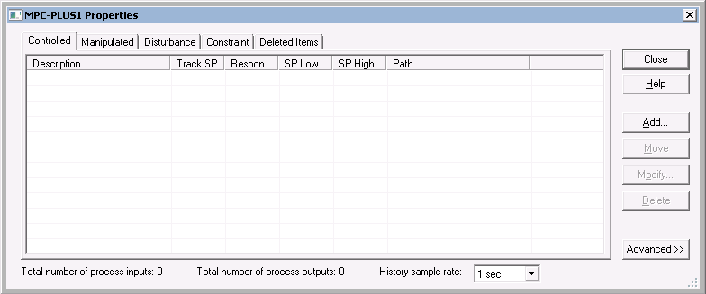
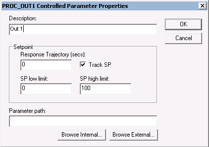
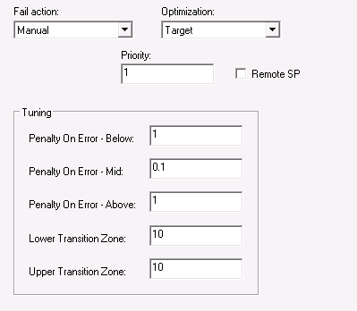
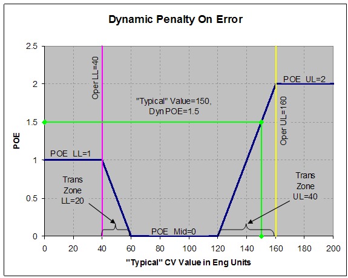
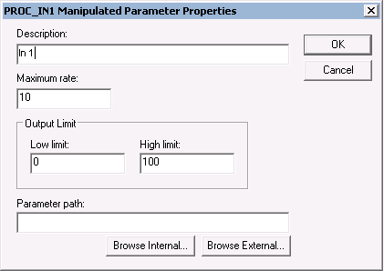
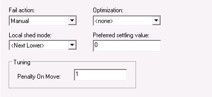
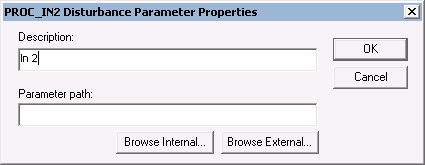
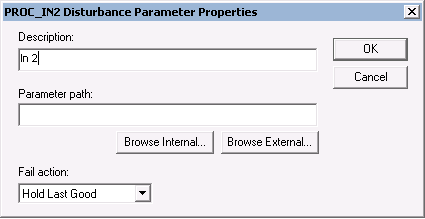
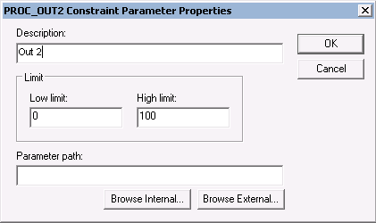
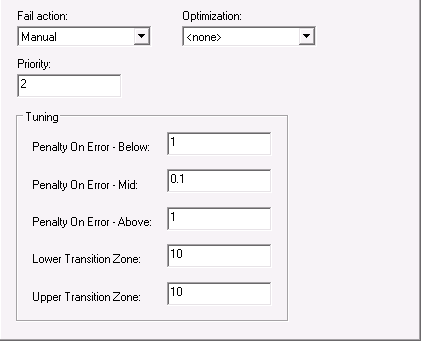

Model Predictive Control Professional Plus function block configuration
Since the number of inputs and outputs associated with an MPCPlus application can vary, the MPCPlus block is designed to support a total of forty (40) Disturbance and Manipulated inputs and a total of eighty (80) Controlled and Constraint parameters. The number of controlled and constrained parameters can be less than or greater than the number of manipulated parameters. Refer to Controller Tuning Recommendations in the Using DeltaV PredictPro topic to select the best penalty on move and penalty on error for a specific configuration.
Use the Control Studio application to configure the MPCPlus block. To enter configuration information, right-click the MPCPlus function block and select Properties to open the Properties dialog. Use this dialog to add Control, Manipulate, Constraint, or Disturbance parameters and enter configuration information.

Select the Controlled, Manipulated, Disturbance, or Constraint tab on this dialog, and then click the Add button to add a new entry. Once you have added parameters to the MPCPlus block, you can modify them from this dialog by selecting a parameter and clicking Modify. A dialog for defining the associated parameters opens.
Configuring controlled parameters
For a Controlled parameter, the following dialog opens.

Provide the following configuration information:
- Description - The parameter name that you want to appear in the PredictPro application and the MPC Operate Pro application. (MPC Operate Pro is built with MPCPlus dynamos for the MPCPlus block). The default description name is the input instance number for example, Out 1. It is recommended that you create a new description that contains 14 or fewer characters.
- Response Trajectory - The Response Trajectory is an exponential trajectory defined by its filter time constant, current process output, and future required process output (SP). Response Trajectory is used to increase stability by slowing down the controller reaction to CV error. When unmeasured disturbances are significant, Response Trajectory filter time constant values between 1 to 5 times the TSS are recommended.
- SP Low Limit - The minimum SP value (in engineering units) that an operator can enter. A setpoint entry that is lower than this limit is truncated to the limit value.
- SP High Limit - The maximum SP value (in engineering units) that an operator can enter. A setpoint entry that is greater than this limit is truncated to the limit value.
- Track SP - If enabled, the SP tracks the Controlled parameter value when the MPCPro block is in a Target mode of MAN. This option is enabled by default.
- Parameter path - The reference to the block output that will provide the Control parameter value. If the block providing this value is contained in the same module as the MPCPlus block, select the Browse Internal button to define the parameter path. Otherwise, select the Browse External button to define the parameter path.
When the Advanced button is selected in the Properties dialog,
additional information appears at the bottom of the Control parameter dialog as
shown below.

Provide the following configuration information:
- Fail Action - The action to be taken when the input status indicates a BAD input. The actions that can be taken are:
- No Action - Take no control action on the measurement value.
- Shed Local Modes - Change the downstream blocks associated with the Manipulated parameters to their local mode - as defined by Local Shed mode selection of the Manipulate parameter.
- Manual - Change the actual mode of the MPCPlus block to Manual until the condition clears.
- Simulate Fail Manual - Simulate the measurement input. If the time of simulation exceeds the maximum allowed (based on Time to Steady State), then the MPC actual mode will change to Man until this condition clears.
- Simulate Fail Shed Local - Simulate the measurement input. If the time of simulation exceed the maximum allowed (based on Time to Steady State), then the downstream blocks associated with the Manipulated parameters will be forced to their local mode - as defined by Local Shed mode selection of the Manipulate parameter.
- Optimization -The impact of the Control parameter on plant cost or profit. The selections are:
- None - Not considered in the objective function. There is no cost or profit associated with this parameter.
- Maximize - Indicates that this parameter is associated with profit. Control action is taken to push the parameter up towards its associated setpoint high limit without going above this limit.
- Minimize - Indicates that this parameter is associated with cost. Control action is taken to push the parameter down towards its associated setpoint low limit without going below this limit.
- Target - Indicates that control action is taken to minimize the deviation of this parameter above and below its setpoint. The optimizer gives a higher preference to achieving a Target objective than a Maximize or Minimize objective
- PSV- Indicates that control action is taken to minimize the deviation of this parameter above and below its setpoint. The optimizer gives a lower preference to achieving a PSV objective than a Target, Maximize, or Minimize objective.
- Priority - Numeric value that can be assigned to Control and Constraint parameters to indicate relative importance where the smaller number indicates higher importance/priority. If it is not possible for the optimizer to find a solution that satisfies all operating constraint limits within the specified control ranges, then a solution will be found that best satisfies the control ranges and constraint limits that have the highest priority.
- Remote SP - The setpoint of the Control parameter will be set by another application or function block that is writing to the associated RCAS_IN(xx) parameter.
- Tuning - Defines tuning parameters for a control or constrained output. Tuning parameters specify Penalty on Error (POE) map for the output applied for dynamic POE calculation.
- Penalty on Error Below - Penalty on Error below output Low Limit.
- Penalty on Error Mid - Penalty on Error in the middle zone of the output operating range.
- Penalty on Error Above - Penalty on Error above output Upper Limit.
- Lower Transition Zone - Distance between Middle zone and Low Limit.
- Upper Transition Zone - Distance between Upper Limit and Middle zone.
The following figure shows how the dynamic POE for a given CV is
determined in a transition zone at each control cycle given a typical CV
value.

To determine the typical CV Value, the dynamic POE is calculated for the current CV Value, the open loop predicted CV Value, and the LP Target for the CV. The largest of these three values is used as the typical CV value. If the CV is in the middle of the limits, is predicted to stay in the middle, and the LP target is also in the middle, the CV should be de-emphasized by using the POE Mid value, which is typically zero or a small value.
POE tuning parameters can be updated online from MPC Operate Pro.
Note that the POE associated with a limit can also be set to zero if that limit can be ignored. An example where this would apply is a column differential pressure constraint. Violating the upper limit will allow the column to flood, but there is no real lower limit. By setting POE LL = 0, the lower limit will be ignored dynamically.
Configuring manipulated parameters
For a Manipulated parameter, the following dialog opens.

Provide the following configuration information:
- Description - The parameter name that you want to appear in the PredictPro application and the MPC Operate Pro application. (MPC Operate Pro is built with MPCPlus dynamos for the MPCPlus block.) The default description name is the input instance number for example, In 1. It is recommended that you create a new description that contains 14 or fewer characters.
- Maximum MV Rate - The maximum rate (in engineering units per second) at which the MPCPlus function block can change the Manipulated parameter.
- Low Limit - The minimum manipulated parameter value (in engineering units) that an operator can enter. An entry that is lower than this limit is truncated to the limit value.
- High Limit - The maximum manipulated parameter value (in engineering units) that an operator can enter. An entry that is greater than this limit is truncated to the limit value.
- Parameter Path - The reference to the block input that is written to the manipulate value. Based on this path, the MPCPlus block automatically accesses the mode and back calculation output of the downstream block. If the block providing this value is contained in the same module as the MPCPlus block, select the Browse Internal button to define the parameter path. Otherwise, select the Browse External button to define the parameter path. Emerson does not recommend cascading the MPC-PLUS block to the Bias/Gain or Splitter blocks. These blocks do not have a PV_SCALE parameter so the identified gain has no meaning.
When the
Advanced button is selected in the
Properties dialog, the additional information
appears at the bottom of the
Manipulate parameter dialog as shown in the
following figure.

Provide the following configuration information:
- Fail Action - The action to be taken when the feedback from the downstream block contains a status of BAD or Not Invited:
- No Action - Maintain the manipulated parameter at its current value with no impact on MPCPlus mode.
- Shed Local Modes - Change the downstream blocks associated with the Manipulated parameters to their local mode - as defined by Local Shed mode selection of the Manipulate parameter.
- Manual - Change the actual mode of the MPCPlus block to MAN until the condition clears.
- Optimization - The impact of the manipulate parameter on plant cost or profit. The selections are:
- None - Not considered in the objective function. There is no cost or profit associated with this parameter.
- Maximize - Indicates that this parameter is associated with profit. Control action is taken to push the manipulated parameter towards its associated high output limit.
- Minimize - Indicates that this parameter is associated with cost. Control action is taken to push the manipulated parameter towards its associated low output limit.
- PSV - Control action is taken to maintain the manipulated parameter at the configured Preferred Settling Value (PSV) within the degree of freedom allowed by the operating conditions and other optimization objectives.
- Equalize - Control action is taken to maintain multiple manipulated parameters at the same value (in percent of scale) within the degrees of freedom allowed by the operating conditions and other optimization objectives. Note that two or more manipulated parameters must be configured for Equalize if this option is selected. All manipulated variables with Equalize enabled must have the same EU scale.
- Local Shed Mode - The target mode that the downstream block will be forced to when a input or output failure is detected and the Failure action is defined as Shed Local. The selections are:
- Next Lower - The mode will be written to the next lower permitted mode of the downstream block. The selection order is: =>Rout =>Rcas =>Cas =>Auto =>Man
- Last Local - The mode is written to the previous target mode (before switching to MPC control).
- ROUT - The mode is written to ROUT.
- RCAS - The mode is written to RCAS.
- CAS - The mode is written to CAS.
- AUTO - The mode is written to AUTO.
- MAN - The mode is written to MAN.
- Preferred Settling Value - The manipulated parameter value that the control tries to achieve if the optimization selection is PSV.
- Penalty on Move (POM) - The penalty assigned to the MV and used on-line every scan for move calculation. POM can be updated on-line from the operator application.
Configuring disturbance parameters
For a Disturbance parameter, the following configuration dialog
appears.

Provide the following configuration information:
- Description - The parameter name that you want to appear in the PredictPro application and the MPC Operate Pro application (MPC Operate Pro is built with MPCPlus dynamos for the MPCPlus block.) The default description name is the input instance number for example, In2. It is recommended that you create a new description that contains 14 or fewer characters.
- Parameter path - The reference to the block output that provides the Disturbance input value. If the block providing this value is contained in the same module as the MPCPro block, select the Browse Internal button to define the parameter path. Otherwise, select the Browse External button to define the parameter path.
When the
Advanced button is selected in the
Properties dialog, the additional information
appears at the bottom of the
Disturbance parameter
dialog as shown in the following figure.

Provide the following configuration information:
- Fail action - The action that should be taken when the Disturbance input has a BAD status. One of the following actions can be selected:
- Hold Last Good - Maintain the last value of the Disturbance input that had a status of Good.
- Shed Local Modes - Change the downstream blocks associated with the Manipulated parameters to their local mode as defined by the Local Shed Mode selection of the manipulate parameter.
- Manual - Change the actual mode of the MPCPro block to manual until the condition clears.
Configuring constraint parameters
For a Constraint parameter, the following configuration dialog
appears.

Provide the following configuration information:
- Description - The parameter name that you want to appear in the PredictPro application and the MPC Operate Pro application (MPC Operate Pro is built with MPCPlus dynamos for the MPCPlus block.) The default description name is the input instance number, for example, 2nd output. You can create a new description; however, it is recommended that the parameter description contain 14 or fewer characters.
- Low Limit - The minimum Constraint target (in engineering units).
- High Limit - The maximum Constraint target (in engineering units).
- Parameter path - The reference to the block output that provides the Constraint input value. If the block providing this value is contained in the same module as the MPCPro block, select the Browse Internal button to define the parameter path. Otherwise, select the Browse External button to define the parameter path.
When the
Advanced button is selected in the
Properties dialog, the additional information
appears at the bottom of the
Constraint parameter dialog as shown in the
following figure.

Provide the following configuration information:
- Fail action - The action to be taken when the input status indicates a BAD input. The actions that can be taken are:
- No Action - Take no control action on the measurement value.
- Shed Local Modes - Change the downstream blocks associated with the Manipulated parameters to their local mode - as defined by Local Shed mode selection of the Manipulate parameter.
- Manual - Change the actual mode of the MPCPro block to Manual until the condition clears.
- Simulate Fail Manual - Simulate the measurement input. If the time of simulation exceeds the maximum allowed (based on Time to Steady State), then the MPC actual mode will change to Man until this condition clears.
- Simulate Fail Shed Local - Simulate the measurement input. If the time of simulation exceed the maximum allowed (based on Time to Steady State), then the downstream blocks associated with the Manipulated parameters will be forced to their local mode - as defined by Local Shed mode selection of the Manipulate parameter.
- Optimization - The impact of the Control parameter on plant cost or profit. The selections are:
- None - The parameter is not included in the objective function. There is no cost or profit associated with the parameter. The control will respond to constraint violations and keep the constraint variable within limits.
- Maximize - Indicates that this parameter is associated with profit.
- Minimize - Indicates that this parameter is associated with cost.
- Priority - Numeric value that can be assigned to Control and Constraint parameters to indicate relative importance where the smaller number indicates greater importance/priority. If it is not possible for the optimizer to find a solution that satisfies all operating constraint limits within the specified control ranges, then a solution will be found that best satisfies the control ranges and constraint limits that have the highest priority.
- Tuning - Define tuning parameters for a control or constrained output. Tuning parameters specify Penalty on Error (POE) map for the output applied for dynamic POE calculation.
- Penalty on Error Below - Penalty on Error below output Low Limit.
- Penalty on Error Mid - Penalty on Error in the middle zone of the output operating range.
- Penalty on Error Above - Penalty on Error above output Upper Limit.
- Lower Transition Zone - Distance between Middle zone and Low Limit.
- Upper Transition Zone - Distance between Upper Limit and Middle zone.